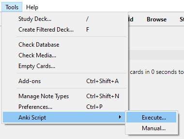

Running scripts
Except for addon installation if there is any error running a script Anki is restored to its previous state.
Domain specific addins
A domain specific addon is initialized using the setup menu item on its menu. An error message is displayed if the setup
action is used more than once.
Once the addon has been initialized the setup menu item is not shown after Anki has been restarted.
Courses
A course addon is initialized using the setup menu item on its menu. An error message is displayed if the setup action is used
more than once.
Once the addon has been initialized the setup menu item is not shown after Anki has been restarted.
The setup must be run before any lessons can be loaded. Lessons are loaded from the course menu.
Currently no checks are made about what order lessons are made, or that lessons have not been loaded before. It is planned to
add such checks in a future Anki Script release.
Ad-hoc scripts
To run an ad-hoc script a directory must be created containing the command file and associated configuration data ,
then the script invoked from the tools menu:

The directory must be selected in the dialog that is displayed.
Note that for ad-hoc executions alias values are not saved when the run has been completed.
Writing scripts
To create an addon using Anki Script the process is:
One approach to creating the card template files and other required configuration data is in a local Anki setup to design the
cards and configure any addons to be configured by the script, and then cut&paste the card templates and addon configuration from
Anki into the configuration data file required by Anki Script.